Carguémos las librerías readxl, ggplot2, ggformula, y dplyr en Google Colab y R antes de comenzar.
# Nos se te olvide instalar la librería "ggformula" en Google Colab.# install.packages("ggformula")library(readxl)library(ggplot2)library(ggformula)library(dplyr)
Datos multivariados
Los datos multivariados son conjunto de datos que contienen observaciones de dos o más variables.
Las variables pueden ser numéricas o categóricas.
Las variables pueden o no depender las unas de las otras.
De hecho, el objetivo es establecer si hay alguna relación entre las variables, así como el tipo de relación.
Ejemplo 1
Consideremos datos de 392 autos sobre sus millas por galón, número de cilindros, caballos de fuerza, peso, aceleración, año, origen, entre otras variables.
Los datos están en el archivo “auto_dataset.xlsx”.
# A tibble: 6 × 9
mpg cylinders displacement horsepower weight acceleration year origin
<dbl> <dbl> <dbl> <chr> <dbl> <dbl> <dbl> <chr>
1 18 8 307 130 3504 12 70 American
2 15 8 350 165 3693 11.5 70 American
3 18 8 318 150 3436 11 70 American
4 16 8 304 150 3433 12 70 American
5 17 8 302 140 3449 10.5 70 American
6 15 8 429 198 4341 10 70 American
# ℹ 1 more variable: `car name` <chr>
Principio 1: Formula la pregunta
En el contexto de datos de múltiples variables, las preguntas típicas a estudiar son:
¿Cómo se relacionan la variable \(X\) y la variable \(Y\)?
¿Es la distribución de la variable \(X\) la misma en todos los subgrupos definidos por la variable \(Z\)?
¿Hay alguna observación inusual en la combinación de valores de las variables \(X\) y \(Y\)?
¿Hay alguna observación inusual en \(X\) para un subgrupo de la variable \(Z\)?
Principio 2: Convierte los datos en información
Existen varios tipos de gráficas que nos ayudan a explorar relaciones entre dos o más variables.
Tipo
Gráfica
Numéricas
Gráfica de dispersión, gráfico de lineas
Categóricas
Gráfica de barras lado a lado, gráfico de barras apiladas
Mixta
Gráfica de caja una al lado de la otro, gráfica de burbujas
Dos variables numéricas
Variable independiente y dependiente
Cuando investigamos la relación entre dos variables (numéricas o categóricas), tenemos una nomenclatura específica para cada una de ellas.
Llamamos a una variable como la variable dependiente o de respuesta, denotandola con la letra \(Y\).
La otra variable la llamamos variable independendiente o predictor, denotandola con la letra \(X\).
Nuestro objetivo es saber si cambios en la variable \(X\) están asociados a cambios en la variable \(Y\), y el tipo de asociación.
Gráfica de dispersión
La gráfica más común para examinar la relación entre dos variables numéricas es la gráfica de dispersión.
Las variables \(X\) y \(Y\) se colocan en el eje horizontal y vertical, respectivamente. Cada punto en la gráfica marca la posición de un par de valores de \(X\) y \(Y\).
El objetivo es explorar relaciones lineales o no lineales entre las variables.
Para construir gráficas de dispersión, usamos la función gf_point(Y ~ X, data = data_set).
Por ejemplo, construyamos una gráfica para explorar la relación entre el peso de un auto (weight) y sus rendimiento en millas por galón (mpg)
gf_point(mpg ~ weight, data = auto_data)
gf_point(mpg ~ weight, data = auto_data)
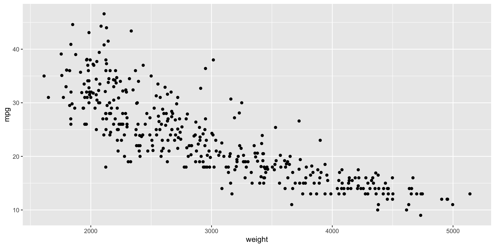
Principio 3: Aplica diseño gráfico
Siguiendo el principio 3, podemos cambiar los valores pre-establecidos de la función para definir colores o formas diferentes de los puntos de la gráfica.
Específicamente, puedes cambiar el color, la forma, y el tamaño de los puntos usando los argumentos color, shape y size, respectivamente.
gf_point(Y ~ X, data = data_set, color, shape, size)
gf_point(mpg ~ weight, data = auto_data, color ="blue", shape =4, size =5)
Posibles formas de los puntos
Para alterar los símbolos que denotan los puntos en una gráifca de dispersión, fijamos el parametro shape a algún número o caracter mostrado abajo.
Siguiendo con el principio 3, puedes usar funciones antes vistas para mejorar aún más la apariencia del gráfico.
Code
mi_diagrama =gf_point(mpg ~ weight, data = auto_data, color ="darkblue", size =2, linetype =1) +labs(title ="Relación de peso y millas por galón en autos", x ="Peso (lb)", y ="Millas por galón")mi_diagrama = mi_diagrama +theme(axis.text=element_text(size=20), axis.title=element_text(size=20),plot.title=element_text(size=25)) mi_diagrama
Incluir el cero
En la gráfica anterior, el valor mínimo del eje vertical está alrededor de 10. Para ajustar el valor mínimo en ese eje a 0 usamos el comando adicional mostrado abajo.
Las gráficas individuales de variables (como el histograma) no permiten estudiar la relación entre dos variables. Solo dan información de la distribución cada variable.
Code
histogram_mpg =gf_histogram( ~ mpg, data = auto_data, fill ="darkblue", color ="black") histogram_mpg = histogram_mpg +labs(title ="Distribución de milas por galón", x ="Millas por galón", y ="Frecuencia")histogram_mpg = histogram_mpg +theme(axis.text=element_text(size=20), axis.title=element_text(size=20),plot.title=element_text(size=25))histogram_mpg
Code
histogram_weight =gf_histogram( ~ weight, data = auto_data, fill ="darkblue", color ="black") histogram_weight = histogram_weight +labs(title ="Distribución de peso", x ="Peso (lb)", y ="Frecuencia")histogram_weight = histogram_weight +theme(axis.text=element_text(size=20), axis.title=element_text(size=20), plot.title=element_text(size=25))histogram_weight
Gráfica de linea
Una gráfica de línea es una representación visual de datos en la que puntos de datos están conectados por una línea. Ejes:
\(X\) (horizontal): Representa el tiempo o la variable independiente.
\(Y\) (vertical): Representa la variable dependiente.
Cada punto representa un valor en un momento dado.
El objetivo es explorar tendencias a lo largo del tiempo o la evolución de una variable continua.
Ejemplo 2
Considera los datos en el archivo “spotify.xlsx”. El conjunto de datos de este contiene las reproducciones diarias globales de las cinco canciones más populares en el servicio de transmisión de música Spotify en el 2017.
# A tibble: 3 × 7
Date Day `Shape of You` Despacito `Something Just Like This`
<dttm> <dbl> <dbl> <dbl> <dbl>
1 2017-01-06 00:00:00 1 12287078 NA NA
2 2017-01-07 00:00:00 2 13190270 NA NA
3 2017-01-08 00:00:00 3 13099919 NA NA
# ℹ 2 more variables: HUMBLE. <dbl>, Unforgettable <dbl>
Nos enfocaremos en la canción Despacito de Luis Fonsi. Para construir gráficas de dispersión, usamos la función gf_line(Y ~ X, data = data_set).
gf_line(Despacito ~ Date, data = spotify_data)
Aplicando el principio 3
Podemos cambiar varios aspectos de la gráfica usando argumentos adicionales linetype, size, y color.
gf_line(Y ~ X, linetype, size, color, data = data_set).
Code
mi_linea =gf_line(Despacito ~ Date, data = spotify_data, color ="darkblue", size =1.3) +labs(title ="Popularidad de la canción despacito de Luis Fonsi", x ="Fecha", y ="Número de reproducciones en Spotify")mi_linea = mi_linea +theme(axis.text=element_text(size=20), axis.title=element_text(size=18),plot.title=element_text(size=25)) mi_linea
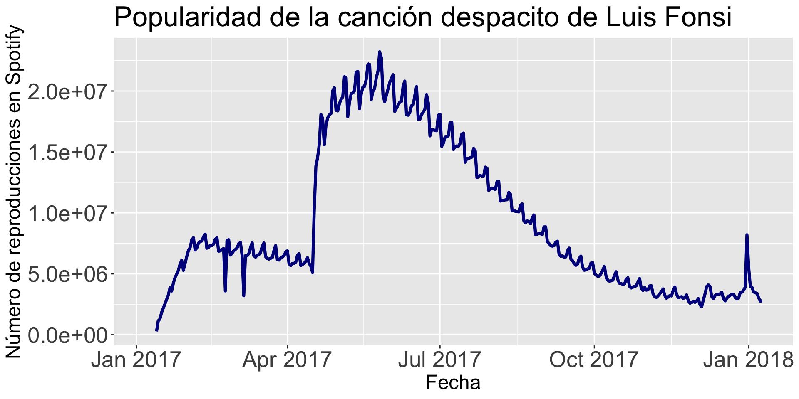
Tipos de linea
Para cambiar el tipo de linea, fijamos el parametro linetype a algún número o palabra mostrada abajo.
Una variable categórica y una numérica
!Divide los datos en grupos!
Para examinar la relación entre una variable numérica y una categórica, usamos la variable categórica para dividir los datos en grupos. Así comparamos la distribución de la variable numérica entre estos grupos.
En este contexto:
\(X\) es la variable categórica.
\(Y\) es la variable numérica.
La gráfica de cajas lado al lado es la más efectiva para estudiar la relación entre una variable categórica y una numérica.
Gráfica de cajas por grupos
La gráfica de cajas lado a lado compara la distribución de una variable en diferentes grupos.
La gráfica se obtiene con la función
gf_boxplot(Y ~ X, data = dataset).
Por ejemplo, si queremos comparar las distribuciones de las millas por galón de los autos construídos en America, Europa, o Japón, usamos el siguiente comando:
gf_boxplot(mpg ~ origin, data = auto_data)
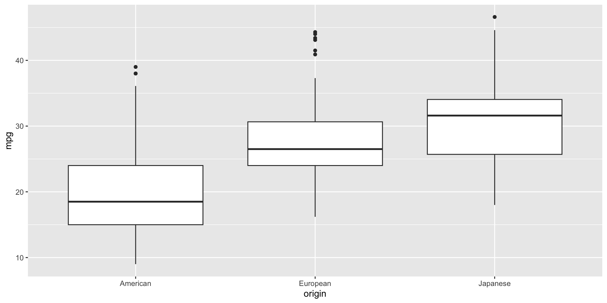
Aplicando el Principio 3
Code
bp_mpg_by_origin =gf_boxplot(mpg ~ origin, data = auto_data, fill ="lightblue", color ="black") bp_mpg_by_origin = bp_mpg_by_origin +labs(y ="Millas por galón", x ="Origen")bp_mpg_by_origin = bp_mpg_by_origin +theme(axis.text=element_text(size=20), axis.title=element_text(size=20))bp_mpg_by_origin
También, podemos cambiar el formato de los puntos atípicos usando los argumentos outlier.color, outlier.shape, y outlier.size.
Code
bp_mpg_by_origin =gf_boxplot(mpg ~ origin, data = auto_data, fill ="lightblue", color ="black", outlier.color ="red",outlier.shape =4, outlier.size =4) bp_mpg_by_origin = bp_mpg_by_origin +labs(y ="Millas por galón", x ="Origen")bp_mpg_by_origin = bp_mpg_by_origin +theme(axis.text=element_text(size=20), axis.title=element_text(size=20))bp_mpg_by_origin
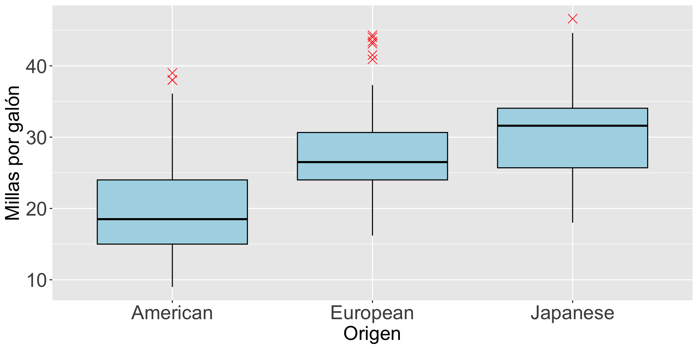
Gráficando resúmenes estadísticos por grupos
Alternativamente, podemos resumir los valores de la variable numérica \(Y\) para cada categoría de la variable \(X\) usando la mediana o el promedio.
Por ejemplo, gráfiquemos el promedio de millas por galón de los autos producidos en America, Europa, y Japón. Para esto, primero calculamos el promedio por cada categoría usando group_by() y summarise().
# A tibble: 3 × 2
origin Promedio.mpg
<chr> <dbl>
1 American 20.1
2 European 27.9
3 Japanese 30.5
Dos tipos de visualizaciones comúnes para graficar una variable numérica y una discreta cuando cada solo hay un valor de la variable categorica por categoría son:
Gráfica de puntos de Cleveland
Gráfica de barras
Gráfica de puntos de Cleveland
La gráfica de puntos de Cleveland codifica datos cuantitativos en distintas categorías. Es una alternativa a un gráfico de barras. Se obtiene con la función gf_point().
gf_point(origin ~ Promedio.mpg, data = resumen_autos)
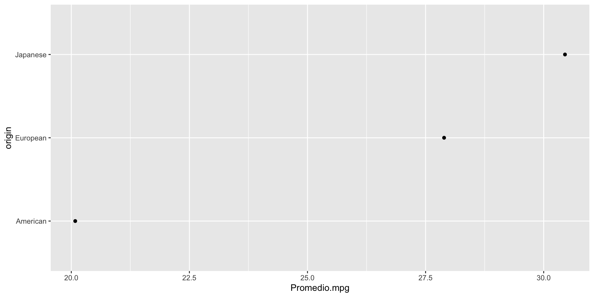
Mejorando la gráfica
Aplicamos el Principio 3 mejorar la gráfica.
Code
gf_point(origin ~ Promedio.mpg, size =10, color ="pink", data = resumen_autos) +labs(y ="Origen", x ="Promedio de Millas por Galón", title ="Comparación de autos de diferences regiones") +scale_x_continuous(limits =c(0, 35)) +theme_bw() +theme(axis.text=element_text(size=20), axis.title=element_text(size=20),plot.title=element_text(size=20))
Gráfica de barras
Para hacer una gráfica de barras donde la longitud de la barra sea igual a un valor específico, usamos la función gf_col() de la librería ggformula.
gf_col(origin ~ Promedio.mpg, data = resumen_autos)
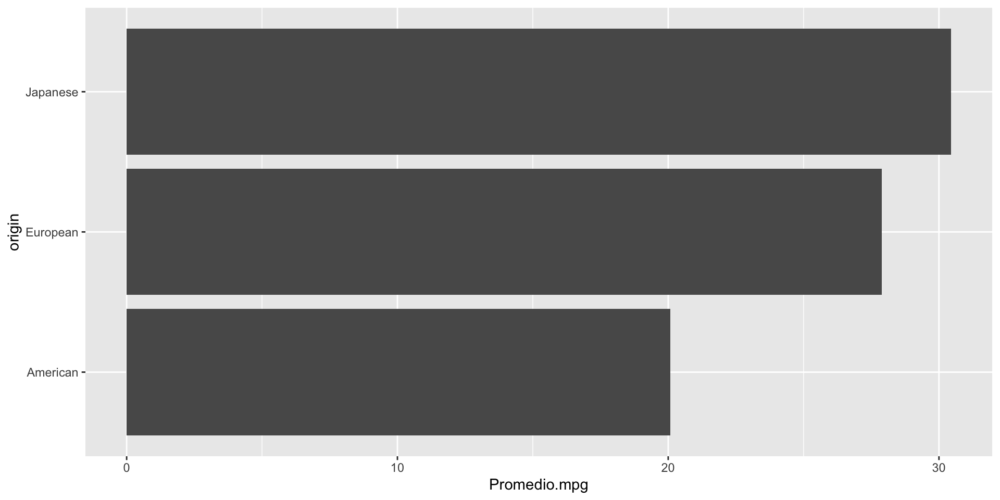
Podemos usar comandos similares a la gráfica de puntos de Cleveland para mejorar la gráfica de barras.
Code
gf_col(origin ~ Promedio.mpg, fill ="pink", data = resumen_autos) +labs(y ="Origen", x ="Promedio de Millas por Galón", title ="Comparación de autos de diferences regiones") +theme_bw() +theme(axis.text=element_text(size=20), axis.title=element_text(size=20),plot.title=element_text(size=20))
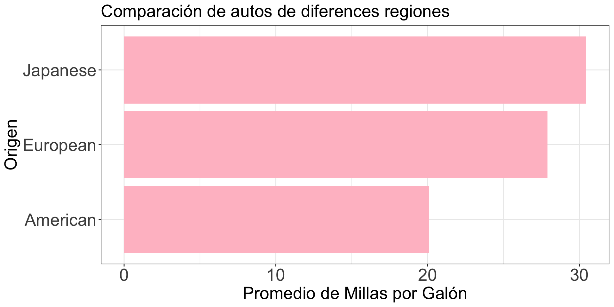
Dos variables categóricas
!Divide los datos en grupos!
Con dos variables categóricas, comparamos la distribución de una variable entre subgrupos definidos por la otra variable.
De hecho, mantenemos constante una variable y trazamos la distribución de la otra.
Para hacer esto, los gráficos más populares son una extensión de las gráficas de barras:
Gráficas de barras apiladas
Gráficas de barras lado al lado
Ejemplo 3
Como ejemplo, consideremos los datos en el archivo “penguins.xlsx”.
La gráfica de barras lado al lado se genera con la función gf_bar(), asignando la variable \(X\) al argumento fill.
El nombre de la variable debe de estar precedido por una tilde ~X.
Por ejemplo, para estudiar la distribución de las especies de pingüinos en las tres diferentes islas usamos lo siguiente:
gf_bar( ~ species, data = penguins_data, fill =~island)
La gráfica muestra la frecuencia de cada especie, separada por el nombre de la isla.
gf_bar( ~ species, fill =~island, data = penguins_data)
Gráfica de barras lado a lado
Una alternativa a la gráfica anterior es poner las barras lado al lado para las categorías de la variable \(X\).
En este caso, se usan los mismos comandos con un argumento extra: position = position_dodge().
gf_bar( ~ species, fill =~island, data = penguins_data, position =position_dodge())
gf_bar( ~ species, data = penguins_data, fill =~island, position =position_dodge())
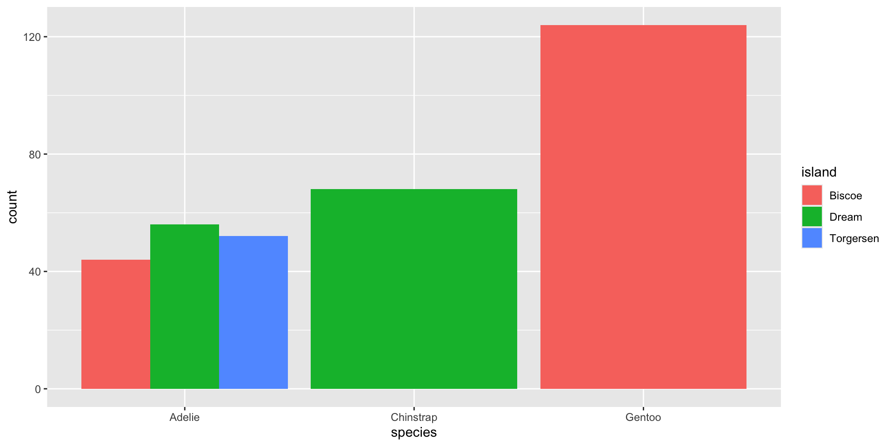
¿Apiladas o lado a lado?
La principal diferencia entre los gráficos de barras apiladas y de lado a lado es que el gráfico de lado a lado muestra los valores en barras separadas dentro de una categoría.
Ventajas de barras apiladas:
Es más fácil entender qué proporciones de un todo se dividen entre segmentos.
Agrega visualmente cada proporción.
Ventajas de barras lado a lado:
Es más fácil comparar las alturas de cada entidad individual.
Mejor para comparar entre grupos.
Resúmenes estadísticos
Para variables categóricas, los resúmenes estadísticos más comunes son la frecuencia y la frecuencia relativa.
Con dplyr, calculamos la frecuencia usando la función count(), que cuenta los valores únicos de una o más variables.
# A tibble: 5 × 4
# Groups: island [3]
island species n Proporción
<fct> <fct> <int> <dbl>
1 Biscoe Adelie 44 0.262
2 Biscoe Gentoo 124 0.738
3 Dream Adelie 56 0.452
4 Dream Chinstrap 68 0.548
5 Torgersen Adelie 52 1
Más de una variable
Gráficas para tres variables
Cuando examinamos una distribución o relación, a menudo queremos compararla entre subgrupos de datos.
Este proceso de condicionamiento sobre variables adicionales conduce a visualizaciones que involucran tres o más variables.
Aquí explicamos cómo crear gráficas para visualizar múltiples variables.
Gráfica de dispersión por color
Para dos variables numéricas y una categórica.
gf_point(mpg ~ weight, color =~origin, data = auto_data)
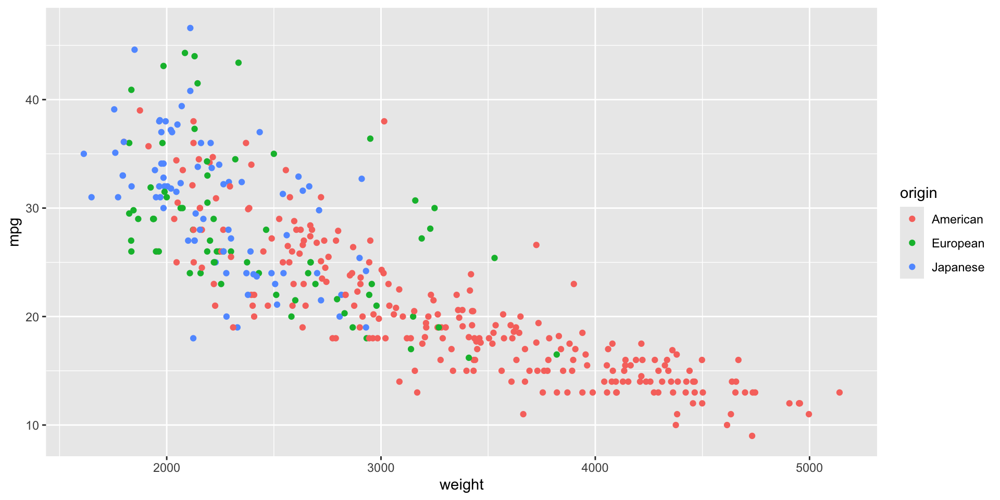
Gráfica de facetas o enrejado
La gráfica de facetas visualiza la relación o distribución de una o dos variables para cada subgrupo definido por una tercera variable \(Z\).
Idea: Crear una gráfica para cada subgrupo de \(Z\).
Para hacer la gráfica, usa la función gf_facet_grid con la siguiente sintaxis:
gf_point(mpg ~ weight, data = auto_data) %>%gf_facet_grid(origin ~ .)
La función produce una rejilla con 1 columna y 3 filas de gráficas. Cada fila acomoda una categoría de origin.
gf_point(mpg ~ weight, data = auto_data) %>%gf_facet_grid(origin ~ .)
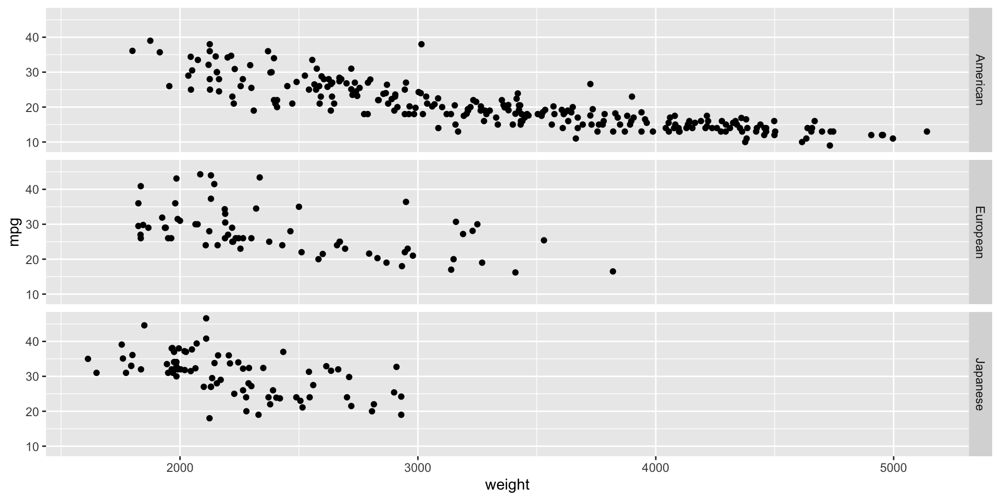
Si cambiamos el orden de la variable origin en la función gf_facet_grid, obtenemos una rejilla de gráficas con tres columnas y una fila de gráficas.
gf_point(mpg ~ weight, data = auto_data) %>%gf_facet_grid( ~ origin)
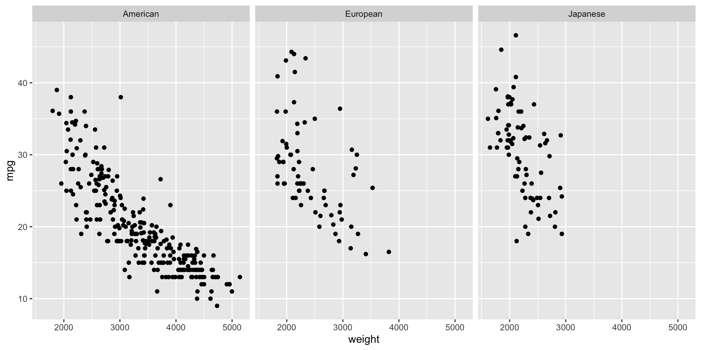
Gráficas de varias líneas
Podemos utilizar las funciones gf_line() y gf_facet_grid() para visualizar la evolución de las reproducciones de las 5 canciones en el archivo “spotify.xlsx” a través del tiempo.
Sin embargo, requerimos manipular los datos para obtener el formato requerido por estas funciones.
El formato requerido
En el formato para una gráfica de varias, necesitamos juntar las columnas Shape of You, Despacito, Something Just Like This, HUMBLE y Unforgettable en dos columnas.
Una columna contendrá el número de reproducciones y la otra el título de la canción.
Ambas columnas estarán ordenadas por la variable Date.
Una nueva librería: tidyr
tidyr permite remodelar y reagrupar un conjunto de datos.
Es parte de una colección de paquetes de ciencia de datos llamado tidyverse.
Para hacer el formateo necesario, usamos la función pivot_longer() de la librería tidyr.
data_lines = spotify_data %>%pivot_longer(c("Shape of You", "Despacito", "Something Just Like This", "HUMBLE.", "Unforgettable"), names_to ="Cancion", values_to ="Reproducciones")data_lines %>%head()
# A tibble: 6 × 4
Date Day Cancion Reproducciones
<dttm> <dbl> <chr> <dbl>
1 2017-01-06 00:00:00 1 Shape of You 12287078
2 2017-01-06 00:00:00 1 Despacito NA
3 2017-01-06 00:00:00 1 Something Just Like This NA
4 2017-01-06 00:00:00 1 HUMBLE. NA
5 2017-01-06 00:00:00 1 Unforgettable NA
6 2017-01-07 00:00:00 2 Shape of You 13190270
Ahora, aplicamos funciones similares sobre el objeto data_lines.
gf_line(Reproducciones ~ Date, data = data_lines) %>%gf_facet_grid( ~ Cancion)
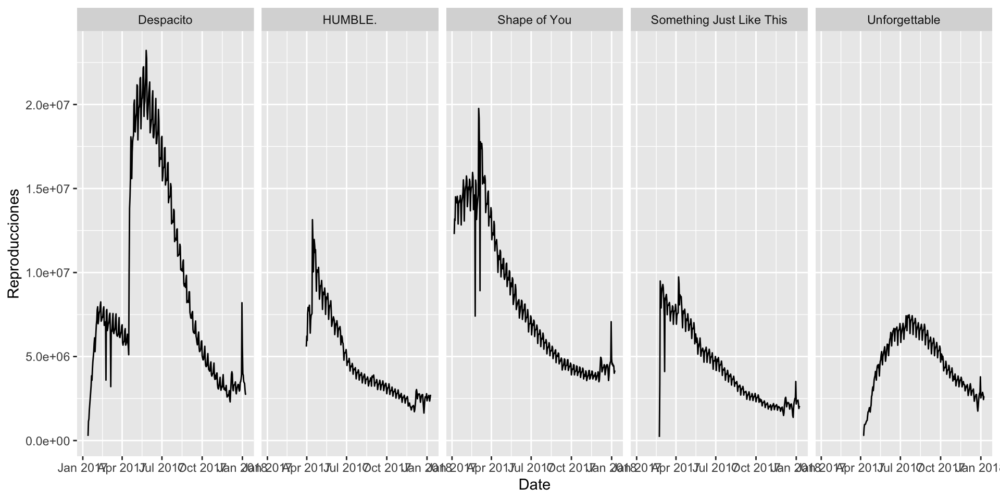
O podemos poner todas las lineas en una sola gráfica.
gf_line(Reproducciones ~ Date, color =~Cancion, data = data_lines)
Gráfica de area
Es una forma especializada de la gráfica de líneas, donde conectamos los puntos con una línea continua y rellenamos la región debajo de esa línea con un color sólido. Se genera usando la función gf_area() de ggformula.
gf_area(Reproducciones ~ Date, color =~Cancion, fill =~Cancion, data = data_lines)
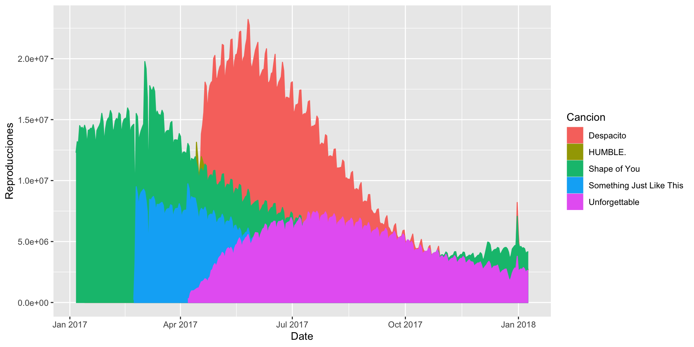
Aplicando el Principio 3
Además de las funciones antes vistas, podemos hacer las areas trasnparentes usando el parametro alpha.
Code
gf_area(Reproducciones ~ Date, color =~Cancion, fill =~Cancion, data = data_lines, alpha =0.5) +theme_bw()
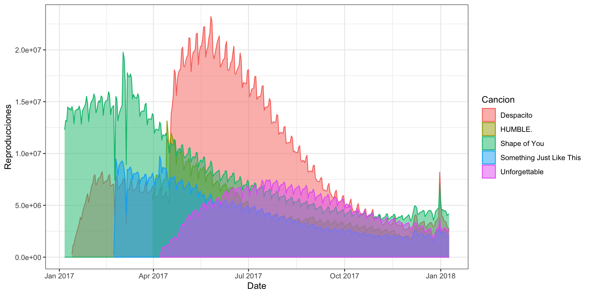
Gráficas para cuatro variables
Una gráfica común para 4 variables es la gráfica de dispersión, donde el color y el tamaño de los símbolos dependen de dos variables categóricas.
gf_point(bill_length_mm ~ bill_depth_mm, size =~island, color =~species, data = penguins_data)
gf_point(bill_length_mm ~ bill_depth_mm, size =~island, color =~species, data = penguins_data)